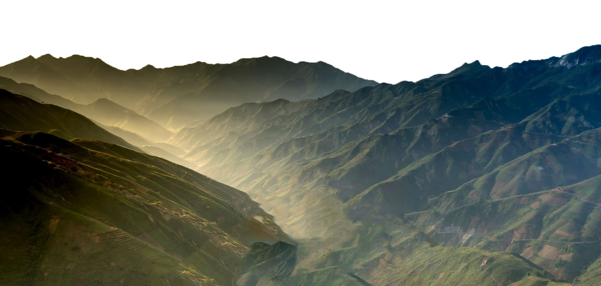
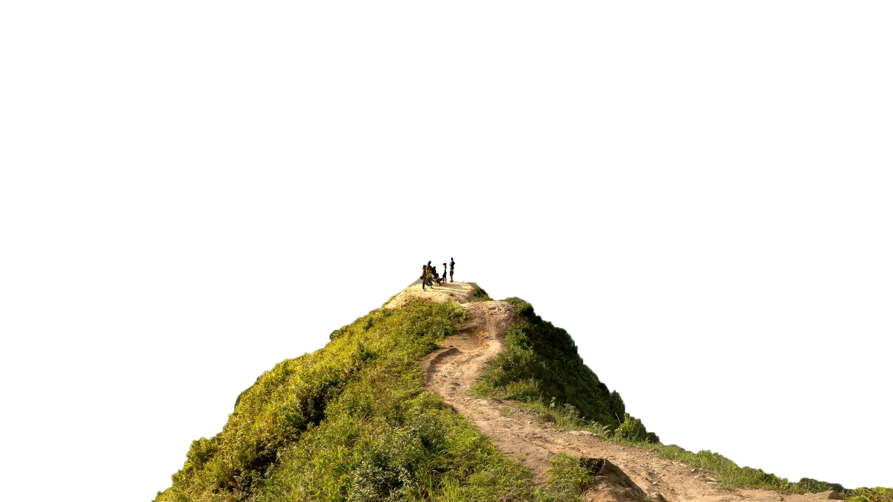

NATURE

Ecology is the study of the relationships between living organisms, including humans, and their physical environment. It seeks to understand the vital connections between plants and animals and the world around them. Ecology also provides information about the benefits of ecosystems and how we can use Earth’s resources in ways that leave the environment healthy for future generations.
Ecologists study these relationships among organisms and habitats of many different sizes, ranging from the study of microscopic bacteria growing in a fish tank, to the complex interactions between the thousands of plant, animal, and other communities found in a desert.
Ecologists also study many kinds of environments. For example, ecologists may study microbes living in the soil under your feet or animals and plants in a rain forest or the ocean. In order to research the environment, scientists ask questions, such as: How do organisms interact with the living and nonliving factors around them? What do organisms need to survive and thrive in their current environments? To find the answers to these questions, ecologists must study and observe all forms of life and their ecosystems throughout our world.
The many specialties within ecology, such as marine, vegetation, and statistical ecology, provide us with information to better understand the world around us. This information also can help us improve our environment, manage our natural resources, and protect human health. The following examples illustrate just a few of the ways that ecological knowledge has positively influenced our lives.
In the 1960s, ecological research identified two of the major causes of poor water quality in lakes and streams-phosphorous and nitrogen-which were found in large amounts in laundry detergents and fertilizers. Provided with this information, citizens were able to take the necessary steps to help restore their communities’ lakes and streams-many of which are once again popular for fishing and swimming.
Biodiversity is all the different kinds of life you’ll find in one area—the variety of animals, plants, fungi, and even microorganisms like bacteria that make up our natural world. Each of these species and organisms work together in ecosystems, like an intricate web, to maintain balance and support life. Biodiversity supports everything in nature that we need to survive: food, clean water, medicine, and shelter.
But as humans put increasing pressure on the planet, using and consuming more resources than ever before, we risk upsetting the balance of ecosystems and losing biodiversity.WWF’s 2022 Living Planet Report found an average 69% decline in global populations of mammals, fish, birds, reptiles, and amphibians since 1970. The 2019 landmark Global Assessment Report by the Intergovernmental Platform on Biodiversity and Ecosystem Services reported 1 million animal and plant species are now threatened with extinction—the highest number in human history.
Before the industrial revolution, ecology was characterized by stability. Within each habitat, ecosystems had been assembled by long-term evolutionary processes where predators and prey, collaborators and competitors, from microbes to mammals co-existed within complex, inter-connected webs.
Change in biodiversity – the mix of plants, animals, fungi and microscopic organisms living within each habitat – occurred but was largely driven by long-term processes happening over centuries to millennia.
Human activity, such as burning fossil fuels and industrialized farming, have combined to dramatically impact the planet’s biomes and ecosystems. Climate change, deforestation, and pollution have destroyed or damaged habitats, changed where species live and eliminated species at a speed and scale comparable to major extinction events of the past.
Industrialized farming methods have seen the cultivation of single crops, known as ‘monoculture’, and the rearing of livestock on a massive scale. This has been, and still is, justified as essential to feeding the expanding human population and delivering more affordable and safer food supplies.
But industrialized agriculture has enormous impact on biodiversity and human health. Instead of wild animals, a small number of farmed animal species – mainly cows and pigs – now dominate. Together they account for 60 per cent of all mammal species by mass, compared to four per cent for wild mammals and 36 per cent for humans. Farmed chickens now account for 57 per cent of all bird species by mass, whereas wild birds make up 29 per cent of the total.
Climate change refers to long-term shifts in temperatures and weather patterns. Such shifts can be natural, due to changes in the sun’s activity or large volcanic eruptions. But since the 1800s, human activities have been the main driver of climate change, primarily due to the burning of fossil fuels like coal, oil and gas.
Burning fossil fuels generates greenhouse gas emissions that act like a blanket wrapped around the Earth, trapping the sun’s heat and raising temperatures.
The main greenhouse gases that are causing climate change include carbon dioxide and methane. These come from using gasoline for driving a car or coal for heating a building, for example. Clearing land and cutting down forests can also release carbon dioxide. Agriculture, oil and gas operations are major sources of methane emissions. Energy, industry, transport, buildings, agriculture and land use are among the main sectors causing greenhouse gases.
In a series of UN reports, thousands of scientists and government reviewers agreed that limiting global temperature rise to no more than 1.5°C would help us avoid the worst climate impacts and maintain a livable climate. Yet policies currently in place point to a 3°C temperature rise by the end of the century.
The emissions that cause climate change come from every part of the world and affect everyone, but some
countries produce much more than others.The seven biggest emitters alone (China, the United States of
America, India, the European Union, Indonesia, the Russian Federation, and Brazil) accounted for about
half of all global greenhouse gas emissions in 2020.
Everyone must take climate action, but people and countries creating more of the problem have a greater
responsibility to act first.
Your participation is crucial in helping us protect and preserve our planet's delicate ecosystems. There are many ways you can make a difference, whether you have time to volunteer, resources to donate, or simply want to learn more about living sustainably. Here's how you can get involved:
Your participation is the heart of our mission. Whether you're volunteering your time, donating resources, or advocating for change, every action counts. Join us in creating a sustainable future for all living beings.